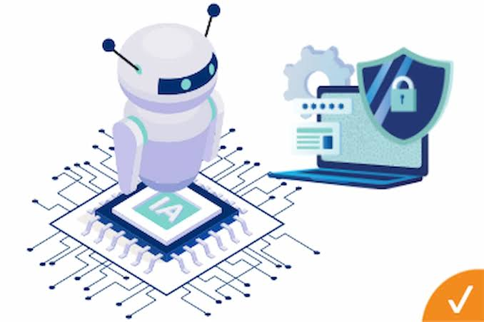

La convergencia de la inteligencia artificial y la automatización ha transformado por completo la ciberseguridad, convirtiendo la defensa digital en una batalla de alta velocidad donde los algoritmos compiten contra los algoritmos en cuestión de milisegundos. En el panorama actual, el volumen de datos, dispositivos y alertas que genera una red empresarial supera por completo la capacidad de análisis de cualquier equipo humano, lo que ha obligado a integrar modelos de aprendizaje automático y sistemas automatizados para mantener la infraestructura a salvo. Por el lado defensivo, la inteligencia artificial actúa como un vigilante constante que aprende el comportamiento habitual de los usuarios y sistemas para identificar anomalías de inmediato, como un intento de inicio de sesión inusual o la descarga masiva de archivos a altas horas de la noche. Cuando se detecta una amenaza de este tipo, la automatización entra en juego a través de herramientas que aíslan el dispositivo infectado de la red, bloquean direcciones IP sospechosas y cierran puertos vulnerables en tiempo real, conteniendo el peligro mucho antes de que un analista humano pueda siquiera abrir la notificación. Sin embargo, esta tecnología es un arma de doble filo, ya que los ciberdelincuentes también la utilizan para perfeccionar sus ataques a una escala masiva. Con el uso de la inteligencia artificial generativa, los atacantes ahora crean campañas de phishing hiperpersonalizadas y sin errores gramaticales que suplantan con gran precisión la identidad de directivos o entidades financieras. Asimismo, emplean algoritmos para desarrollar malware polimórfico, un tipo de software malicioso que altera su propio código cada vez que se propaga para evadir las firmas de los antivirus tradicionales, e incluso recurren a técnicas de deepfake para clonar voces y rostros en videollamadas con el fin de autorizar transferencias fraudulentas. Ante esta realidad, la ciberseguridad moderna ya no depende de la velocidad del factor humano para detener las intrusiones, sino de su capacidad estratégica para programar, supervisar y refinar estas defensas automatizadas, dejando que la inteligencia artificial se encargue de la detección masiva mientras los expertos se concentran en la toma de decisiones críticas y la resiliencia del negocio.